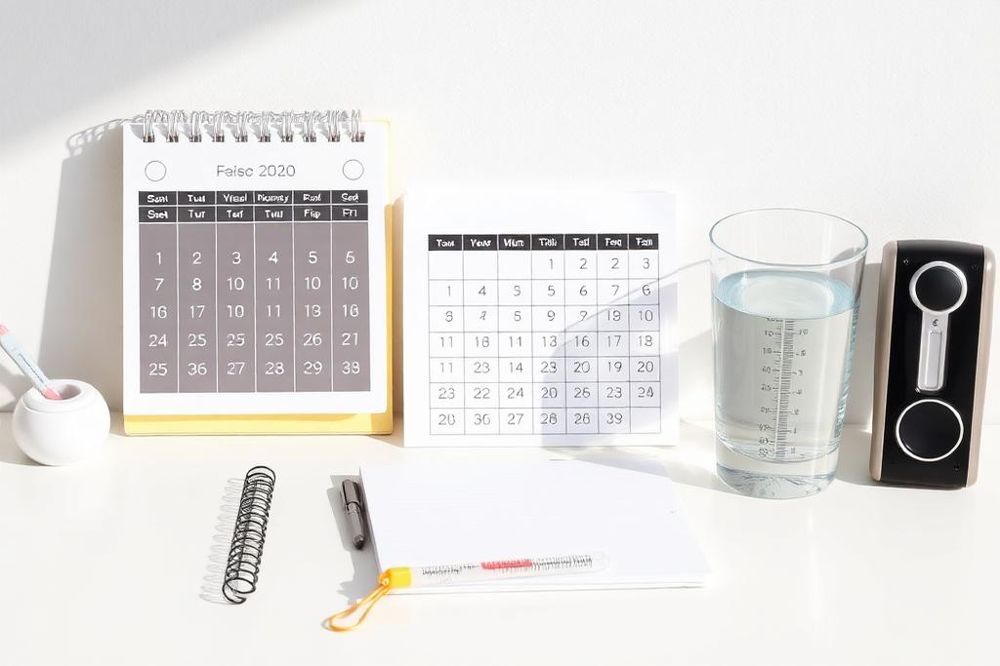

Understanding Your Fertile Window
Six days a cycle really matter. Here is how to find yours using cycle length, cervical mucus and simple tracking — no expensive gadgets required.
Read articleClear, compassionate answers to the questions people are often afraid to ask out loud.

Six days a cycle really matter. Here is how to find yours using cycle length, cervical mucus and simple tracking — no expensive gadgets required.
Read articleTrying for months without a positive test is exhausting. Here is what is actually happening, what is normal, and the point at which testing becomes worthwhile.
Read articleFrom screening to retrieval, a clear and honest walkthrough of the egg donation process — including the questions donors are often too shy to ask.
Read article
Irregular periods, spotting, and cycle length changes are your body sending signals. Here is how to read them.
Read article
Spotting, cramping, and fatigue can all be early indicators. Here is what is worth noting and what is likely nothing.
Read articleFrom your first enquiry to the day of retrieval — a step-by-step guide for women considering egg donation for the first time.
Read article